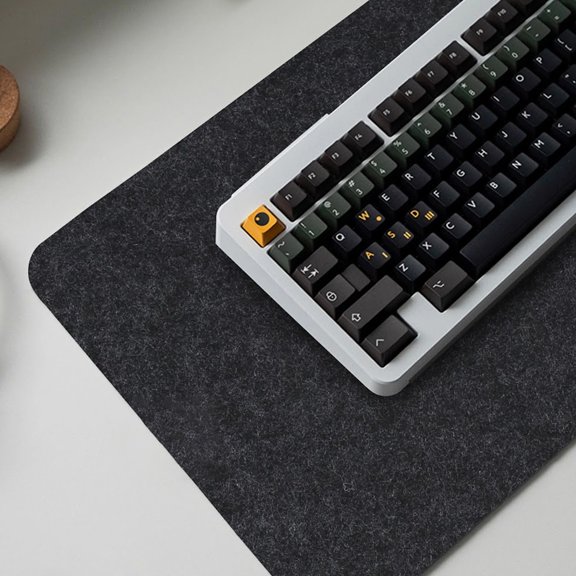

Светло-серый войлок
−20%

Desk Mat Light
Натуральный войлок 4 мм, противоскользящая силиконовая основа
Светло-серый шерстяной меланж. Придаёт сетапу скандинавскую свежесть, гармонирует со светлыми столешницами и серебристыми девайсами Apple. Обеспечивает глухой приятный звук при печати.
- Размер: 80.0 × 40.0 × 0.4 см
- Артикул: 20240408
- Толщина: 4 мм (акустический прессинг)
- Основание: Силиконовый антислип